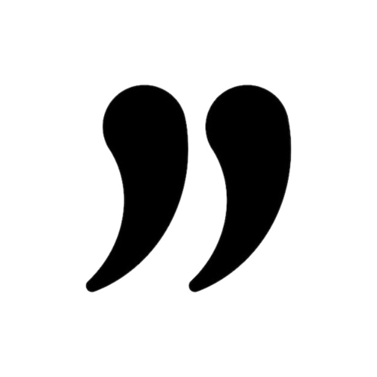

¿Perdiste o encontraste una mascota? Llama al (702) 555-GUAU para recibir ayuda
¿Perdiste o encontraste una mascota? Llama al (702) 555-GUAU para recibir ayuda


“Adopté a Bruno y Clara hace casi un año. La primera semana
Bruno escondió tres medias, rompió una planta y se quedó dormido
dentro de una caja de ropa limpia. Honestamente, fue imposible
no encariñarnos. La fundación nos ayudó bastante durante el
proceso y siempre estuvieron pendientes de cómo se estaban
adaptando.”
-Daniela Rojas


“En casa queríamos adoptar desde hace tiempo, pero teníamos
muchas dudas porque tenemos dos niños pequeños. La fundación nos
orientó desde el inicio y nos recomendaron un gato que se
adaptaba bien a familias con niños. Hoy ‘Milo’ ya es parte de la
rutina de todos.”
-Patricia Gómez

“Encontré a Luna después de un accidente en la carretera. Pensé
que no iba a sobrevivir. Me comuniqué con Patitas Felices y en
menos de una hora ya estaban ayudando con el traslado y la
atención veterinaria. Verla recuperarse y luego encontrarle una
familia fue algo que todavía me cuesta explicar.”
-Miguel Herrera